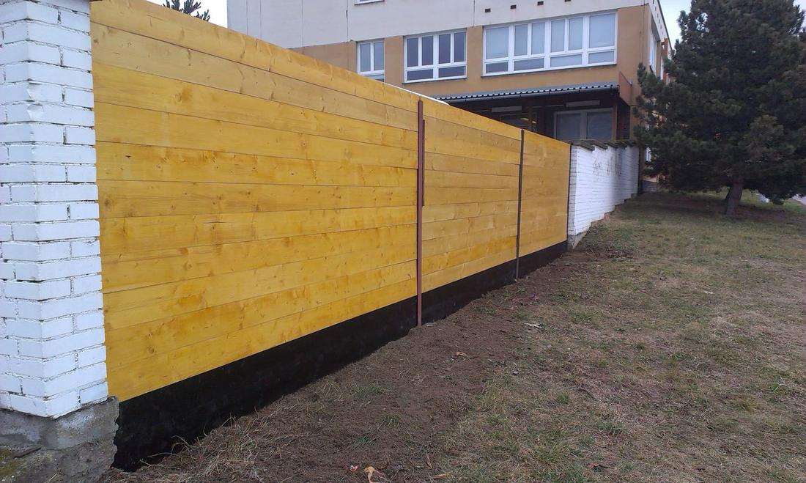
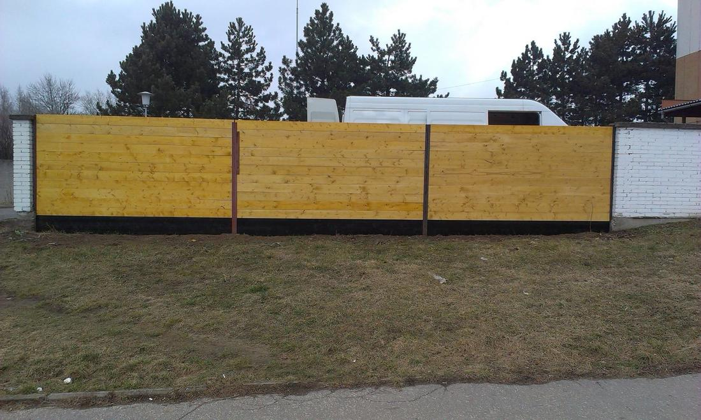
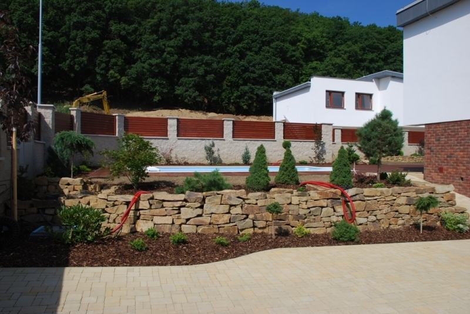
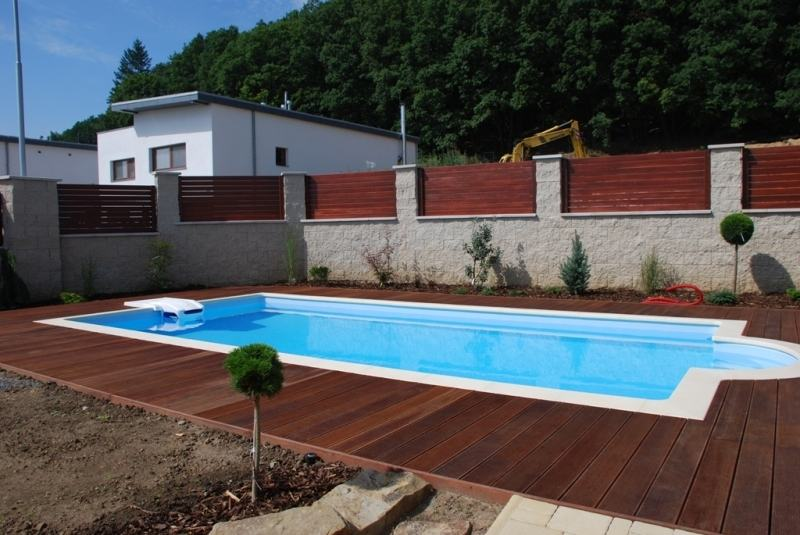
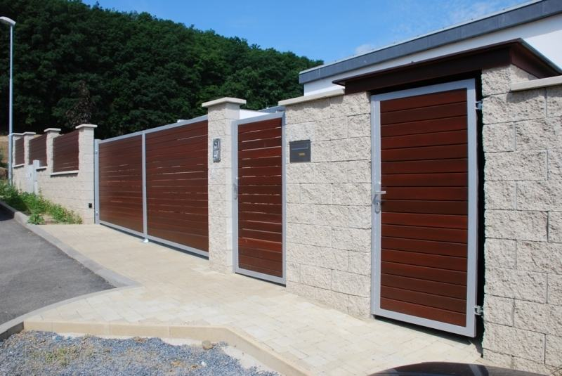
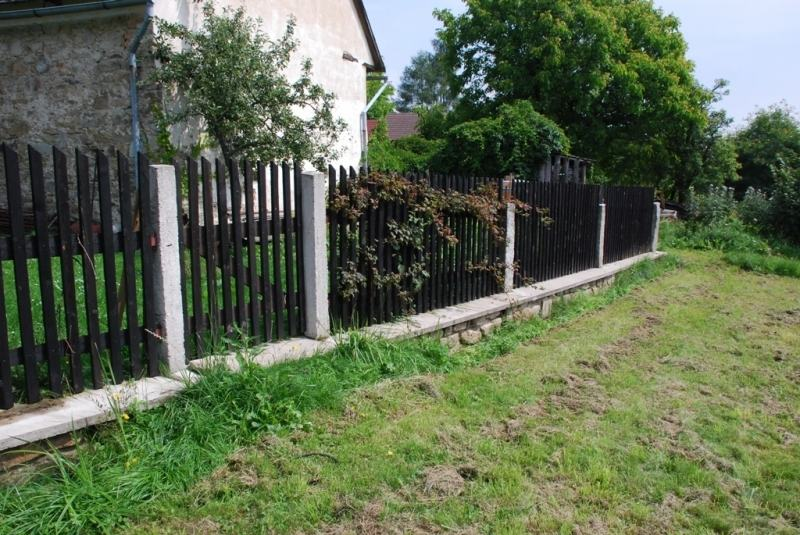
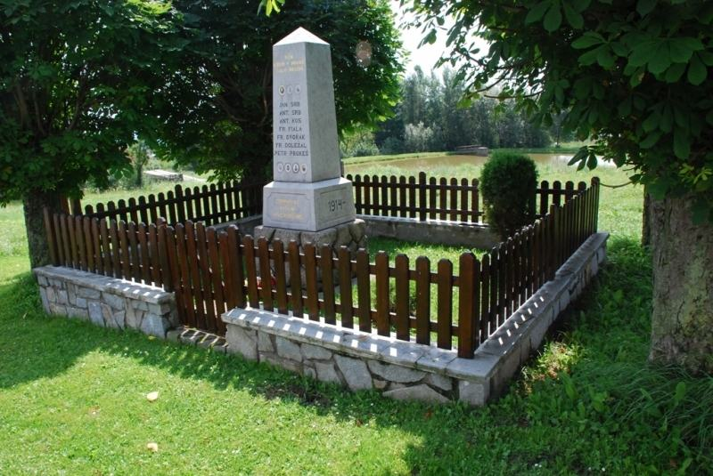
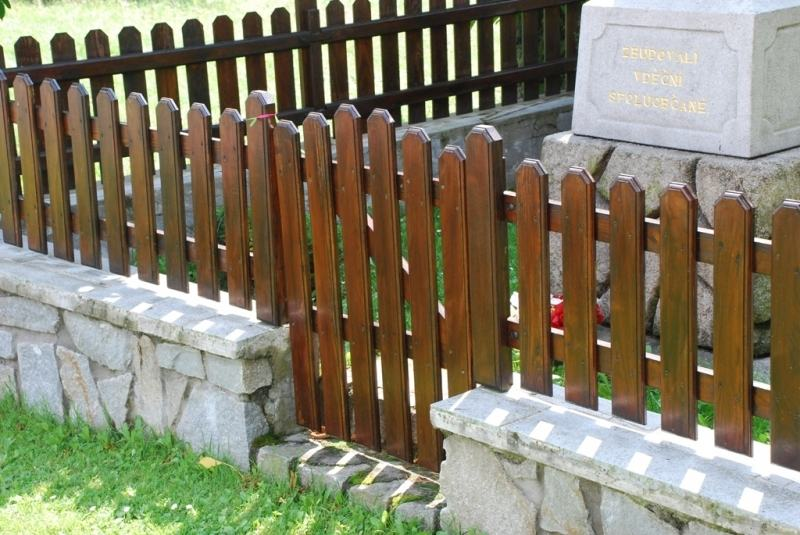

Dřevěné ploty
Ploty, zástěny, branky a plotová pole ze smrku, modřínu, borovice i dubu.
Jak to děláme
Vyrábíme celodřevěné ploty i dřevěné výplně mezi zděné sloupky a podezdívku. Plot může být úplně neprůhledný, nebo s mezerami.
Výšku, tvar, hustotu výplně, zakončení plotovek i odstín si vyberete sami. Hrany můžou být sražené nebo hoblované.
Dřevěný plot se dá opravovat: jednotlivá pole jde v čase vyměnit nebo přetřít, aniž by se musel měnit celý plot.
Co pro vás vyrobíme
- Neprůhledné ploty pro soukromí
- Plotové zástěny k posezení
- Plotová pole mezi zděné sloupky
- Ploty z kulatiny
- Dřevěné branky
- Okrasné zahradní ploty
- Dřeviny
- Smrk, modřín, borovice, dub
- Odstín
- Dřevo natóníme do požadované barvy
- Údržba
- Pole jdou vyměnit jednotlivě
Realizace
Z naší dílny
















Poptat zakázku
Napište nám, kam nábytek přijde, jaké má mít přibližné rozměry a kdy ho potřebujete. Ozveme se s možnostmi, odhadem ceny a termínu.
Co vyrábíme